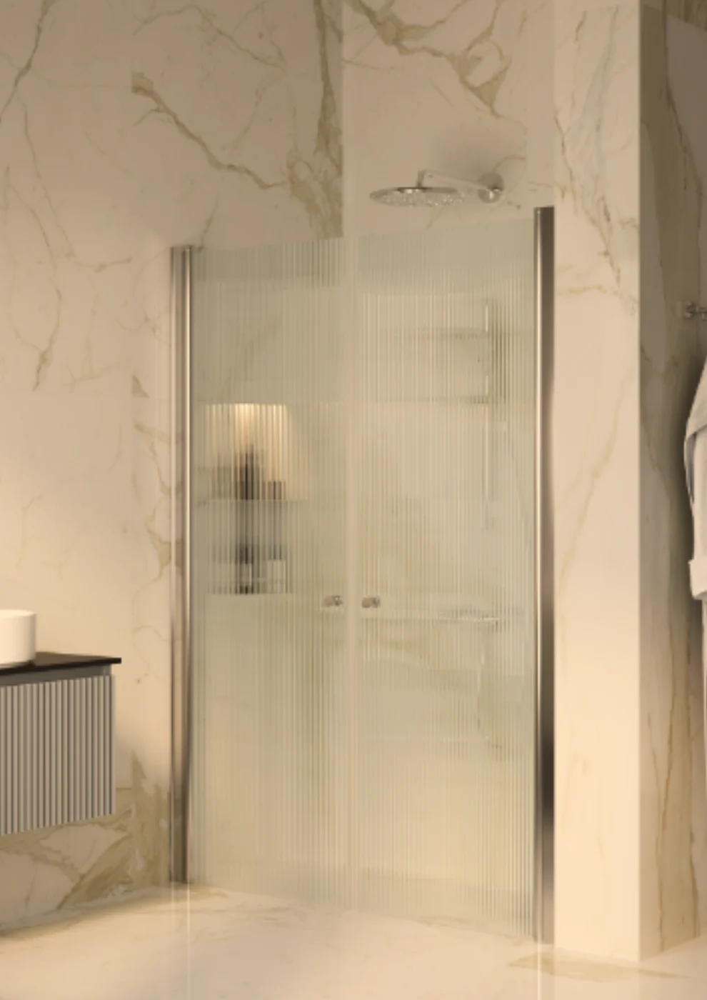

התמונות להמחשת הדגם; הגימור והמראה בפועל עשויים להשתנות לפי הבחירה. פריטים נלווים שבתמונה אינם בהכרח כלולים בהצעה.
מקלחונים ואמבטיונים
יסמין מקלחון חזיתי שתי דלתות
מקלחון מקיר לקיר עם שתי דלתות הנפתחות פנימה והחוצה באמצעות ציר עולה ויורד. פרופיל אלומיניום וידיות כפתור.
מפרט
סוגמקלחון חזיתי שתי דלתות
מידות75-80 / 80-85 / 85-90 / 90-95 / 95-100 / 100-105 / 105-110 / 110-115 / 115-120
צבעים / גימוריםניקל / שחור מט
זכוכיתמחוסמת בעובי 6 מ״מ
גובה190 ס״מ
פתיחהשתי דלתות פנימה והחוצה
אטימהזוג מגנטים ומגב רצפה מצוינים במפרט הספק